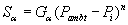
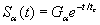
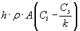

CONTAM 允许您定义生成， Ga ，并去除， Ra ，一些简单情况的系数。
常数系数模型
常数系数或一般源/汇模型使用以下方程：
|
|
(15) |
哪里 Sa 被称为污染物 a “源力”。方程 (16) 中各项的 CONTAM 内部单位为： Ca [kga / 公斤 air], Ga, Sa [kga /s]，和 Ra [kgair /s]。您可以用大量单位来表示这些值，并自动转换为内部值。
对于室内空气过滤装置来说， G = 0.0 和 R = f•e 哪里 f 是通过过滤器的室内空气的流速， e 为装置的单程去除效率。
压力驱动模型
压力驱动源/汇模型旨在模拟受内外压差控制的污染物源，例如进入地下室的氡气或土壤气体。在这种情况下，源方程为：
|
 |
(16) |
截止浓度模型
对于挥发性有机化合物，源方程有时表示为以下形式

|
(17) |
哪里 C 截止 是排放停止时的截止浓度。
衰变源模型
挥发性有机化合物的另一个源方程是指数衰减源，其表示形式为
|
 |
(18) |
哪里
Sa
= 污染源强度，
Ga
= 初始排放率，
t
= 自发射开始以来的时间，以及
tc
= 衰减时间常数。
边界层扩散控制模型
边界层扩散控制的可逆源/汇模型遵循以下描述 阿克斯利 1991 。污染物转移到水槽中的速率为
|
 |
(19) |
哪里
h
= 水槽上的平均膜传质系数，
r
= 空气的薄膜密度，体积平均值
&
表面密度，
A
= 吸附剂的表面积，
Ci
= 空气中的浓度，
Cs
= 吸附剂中的浓度，以及
k
= 亨利吸附常数或分配系数。
突发源模型
用户指定的污染物质量在一个时间步长内添加到一个房间，实际上是瞬时添加——在少于一个时间步长的时间内无法解决任何问题。
沉积速度汇模型
沉积速度模型以熟悉的沉积速度术语提供了汇特征的输入。沉积速度模型方程为：

|
(20) |
哪里
Ra(t) = 时间 t 时的去除率
nd = 沉积速度
As = 沉积表面积
m = 元素乘数
rair(t) = 某时刻源区空气密度 t
Ca(t) = 污染物浓度 a 在某个时间 t [Ma / Mair]
s(t) = 时刻表或控制信号值 t [-]
沉积速率汇模型
沉积速率模型以熟悉的沉积或去除速率术语提供了汇特征的输入。沉积速率模型方程为：

|
(21) |
哪里
kd = 沉积速率 [1/T]
Vz = 房间体积 [M 3]
其他术语与沉积速度汇模型相同。